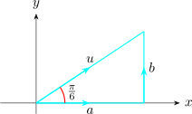

1.3 Directional Derivatives and Gradient Vector
The partial derivatives \[f_x(x_0,y_0) = \lim _{h\to 0} \frac {f(x_0 + h, y_0) - f(x_0,y_0)}{h},\qquad f_y(x_0,y_0) = \lim _{h\to 0} \frac {f(x_0, y_0 +h) - f(x_0,y_0)}{h}\] are the rates of change of \(f\) in the directions of the unit vectors \(\mathbf i\) and \(\mathbf j\). Two directions are not enough to describe a surface, and the existence of both partial derivatives is a weak condition: the function \(\frac {xy}{x^2+y^2}\) of Example 1.2.4, given the value \(0\) at the origin, has \(f_x(0,0) = f_y(0,0) = 0\) (it vanishes on both axes) and yet is not even continuous there. The condition that does the work is the following.
Definition 1.3.1. A function \(f\) of two variables is differentiable at \((x_0,y_0)\) if both partial derivatives exist there and \[f(x_0+h,y_0+k) = f(x_0,y_0) + f_x(x_0,y_0)\,h + f_y(x_0,y_0)\,k + \varepsilon (h,k)\sqrt {h^2+k^2},\] where \(\varepsilon (h,k)\to 0\) as \((h,k)\to (0,0)\).
In words, near \((x_0,y_0)\) the function is the linear function \(f(x_0,y_0) + f_x h + f_y k\) plus an error that is small compared with the distance moved. The graph of that linear function is the tangent plane \[z = f(x_0,y_0) + f_x(x_0,y_0)(x-x_0) + f_y(x_0,y_0)(y-y_0).\] Two facts make the definition easy to use. A differentiable function is continuous, since the right-hand side tends to \(f(x_0,y_0)\) as \((h,k)\to (0,0)\). And if \(f_x\) and \(f_y\) exist near \((x_0,y_0)\) and are continuous at that point, then \(f\) is differentiable there; the proof applies the one-variable mean value theorem once in each variable. So every function built from polynomials, exponentials, logarithms and trigonometric functions is differentiable wherever its partial derivatives are continuous.
Definition 1.3.2. The directional derivative of \(f\) at \((x_0,y_0)\) in the direction of the unit vector \(\mathbf u = \langle a, b\rangle = a\,\mathbf i + b\,\mathbf j\) is \[D_{\mathbf u} f(x_0,y_0) = \lim _{h\to 0} \frac {f(x_0 + ha, y_0+hb) - f(x_0,y_0)}{h},\] when the limit exists.
It is the rate of change of \(f\) per unit distance as \((x,y)\) moves from \((x_0,y_0)\) in the direction \(\mathbf u\). Taking \(\mathbf u = \mathbf i\) gives \(f_x\), and \(\mathbf u = \mathbf j\) gives \(f_y\). The vector must be a unit vector, or the rate would be measured per some other unit of length.
Theorem 1.3.3. If \(f\) is differentiable at \((x,y)\), then \(f\) has a directional derivative there in the direction of every unit vector \(\mathbf u = \langle a, b \rangle \), and \[D_{\mathbf u}f(x,y) = f_x(x,y)\, a + f_y(x,y)\, b .\]
Proof. Apply Definition 1.3.1 with \(h\) replaced by \(ta\) and \(k\) by \(tb\). Since \(a^2+b^2 = 1\), the distance moved is \(\sqrt {t^2a^2+t^2b^2} = |t|\), so \[f(x+ta,y+tb) - f(x,y) = t\,(f_x a + f_y b) + \varepsilon (ta,tb)\,|t| .\] Dividing by \(t\), \[\frac {f(x+ta,y+tb) - f(x,y)}{t} = f_x a + f_y b \pm \varepsilon (ta,tb),\] and the last term tends to \(0\) as \(t\to 0\). □
Example 1.3.4. Let \(f(x,y) = x^3 -3xy + 4y^2\). Find the directional derivative of \(f\) at \((1,2)\) in the direction of the unit vector \(\mathbf u\) making the angle \(\theta = \frac {\pi }{6}\) with the positive \(x\)-axis.
Solution. The partial derivatives are \[f_x = 3x^2 -3y ,\qquad f_y = -3x + 8y ,\] and the unit vector at angle \(\theta \) is \(\mathbf u = \langle \cos \theta ,\sin \theta \rangle \), so here \(a = \cos \frac {\pi }{6} = \frac {\sqrt 3}{2}\) and \(b = \sin \frac {\pi }{6} = \frac 12\).

By Theorem 1.3.3, \begin {align*} D_{\mathbf u} f(x,y) & = (3x^2 - 3y) \frac {\sqrt 3}{2} + (-3x + 8y) \frac {1}{2},\\ D_{\mathbf u} f(1,2) & = (3 - 6)\frac {\sqrt 3}{2} + (-3 + 16)\frac 12 = \frac {13 - 3\sqrt {3}}{2}\approx 3.90 . \end {align*}
Gradient Vector
The formula of Theorem 1.3.3 is a dot product, and naming the vector that appears in it is the most useful single step in this section.
Definition 1.3.5. If \(f\) is a function of two variables \(x\) and \(y\), the gradient of \(f\) is the vector \[\nabla f = \frac {\partial f}{\partial x}\,\mathbf i +\frac {\partial f}{\partial y}\,\mathbf j = \langle f_x , f_y\rangle .\] For a function of three variables, \(\nabla f = \langle f_x, f_y, f_z\rangle \).
With it, Theorem 1.3.3 reads \[D_{\mathbf u}f = f_x\, a + f_y\, b = \langle f_x , f_y\rangle \cdot \langle a,b\rangle = \nabla f\cdot \mathbf u ,\] and the same proof gives \(D_{\mathbf u}f = \nabla f\cdot \mathbf u\) in three variables, where the directional derivative at \((x_0,y_0,z_0)\) in the direction of the unit vector \(\mathbf u = \langle a,b,c\rangle \) is \[D_{\mathbf u}f(x_0,y_0,z_0) = \lim _{h\to 0}\frac {f(x_0 + ha, y_0 + hb, z_0 + hc) - f(x_0,y_0,z_0)}{h} .\]
Solution. \[\nabla f = \langle f_x, f_y\rangle = \langle \cos x + ye^{xy},\ xe^{xy}\rangle , \qquad \nabla f (0,1) = \langle 1 + 1,\ 0\rangle = \langle 2,0\rangle .\]
Example 1.3.7. Find the directional derivative of \(f(x,y) = x^2y^3 -4y\) at the point \((2,-1)\) in the direction of the vector \(\mathbf v = 2\,\mathbf i + 5\,\mathbf j\).
Solution. \[\nabla f (x,y) = \langle 2xy^3,\ 3x^2y^2 -4\rangle ,\qquad \nabla f (2,-1) = \langle -4,\ 8\rangle .\] The given vector is not a unit vector, so it is normalised first: \[\mathbf u = \frac {\mathbf v}{|\mathbf v|} = \frac {1}{\sqrt {29}}\langle 2, 5\rangle .\] Then \[D_{\mathbf u}f(2,-1) = \nabla f (2,-1)\cdot \mathbf u = \frac {-8 + 40}{\sqrt {29}} = \frac {32}{\sqrt {29}} = \frac {32\sqrt {29}}{29}\approx 5.94 .\]
Example 1.3.8. Let \(f(x,y,z) = x\sin yz\).
- 1.
- Find the gradient of \(f\).
- 2.
- Find the directional derivative of \(f\) at \((1,3,0)\) in the direction of \(\mathbf v = \mathbf i + 2\,\mathbf j -\mathbf k\).
Solution.
- 1.
- \[\nabla f = \langle \sin yz,\ xz\cos yz,\ xy\cos yz\rangle .\]
- 2.
- At \((1,3,0)\), \(\sin yz = 0\) and \(\cos yz = 1\), so \(\nabla f(1,3,0) = \langle 0, 0, 3\rangle \). The unit vector is \(\mathbf u = \frac {1}{\sqrt {6}}\langle 1, 2, -1\rangle \), so \[D_{\mathbf u} f(1,3,0) = \langle 0,0,3\rangle \cdot \frac {1}{\sqrt 6}\langle 1,2,-1\rangle = -\frac {3}{\sqrt 6} = -\sqrt {\frac {3}{2}}\approx -1.22 .\]
Example 1.3.9. Find the tangent plane to \(z = x^2 + xy - y^2\) at \((1,2)\), and use it to estimate \(f(1.1, 1.95)\).
Solution. Here \(f(1,2) = 1 + 2 - 4 = -1\), \(f_x = 2x + y = 4\) and \(f_y = x - 2y = -3\) at \((1,2)\). The tangent plane is \[z = -1 + 4(x-1) - 3(y-2).\] At \((1.1,1.95)\) it gives \(-1 + 4(0.1) - 3(-0.05) = -0.45\). The exact value is \(1.21 + 2.145 - 3.8025 = -0.4475\), so the linear approximation is in error by \(0.0025\), which is of the order of the square of the step, as Definition 1.3.1 predicts.
Example 1.3.10. Let \(f(x,y) = \frac {xy}{x^2+y^2}\) for \((x,y)\neq (0,0)\) and \(f(0,0) = 0\). Show that \(f_x(0,0)\) and \(f_y(0,0)\) exist but that \(f\) has no directional derivative at the origin in the direction \(\mathbf u = \frac {1}{\sqrt 2}\langle 1,1\rangle \).
Solution. On the \(x\)-axis \(f(h,0) = 0\), so \(f_x(0,0) = \lim _{h\to 0}\frac {0-0}{h} = 0\), and likewise \(f_y(0,0) = 0\). In the diagonal direction, \[\frac {f\left (\frac {h}{\sqrt 2},\frac {h}{\sqrt 2}\right ) - f(0,0)}{h} = \frac {1}{h}\cdot \frac {h^2/2}{h^2} = \frac {1}{2h},\] which has no limit as \(h\to 0\). If \(f\) were differentiable at the origin, Theorem 1.3.3 would give the directional derivative \(0\cdot \frac {1}{\sqrt 2} + 0\cdot \frac {1}{\sqrt 2} = 0\), so \(f\) is not differentiable there. Partial derivatives alone do not make a function differentiable.
Questions on this section
Stuck on something here? Ask below and it stays attached to this topic.